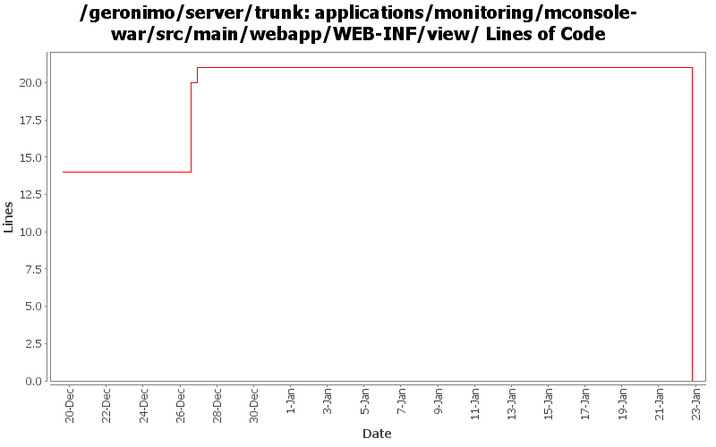

[root]/applications/monitoring/mconsole-war/src/main/webapp/WEB-INF/view

| Author | Changes | Lines of Code | Lines per Change |
|---|---|---|---|
| Totals | 17 (100.0%) | 22 (100.0%) | 1.2 |
| ecraig | 12 (70.6%) | 22 (100.0%) | 1.8 |
| jdillon | 5 (29.4%) | 0 (0.0%) | 0.0 |
(GERONIMO-3747) Moved applications/* to plugins/*
0 lines of code changed in 5 files:
GERONIMO-3684
Upgrade Monitoring Client to use Dojo 1.0.2
Updated the dojo plugin so that all necessary files are included.
Made changes to the monitoring application so that graphs are drawn
using dojo 1.0.2, which is completely different from 0.4.3
0 lines of code changed in 2 files:
Fixed build errors in JSP.
2 lines of code changed in 1 file:
GERONIMO-3714
Monitoring console does no error checking on add/edit graph timeframe
Patch by Viet Nguyen
20 lines of code changed in 3 files:
GERONIMO-3713
monitoring client is not displaying graph names on 'edit view' page
properly.
0 lines of code changed in 6 files: